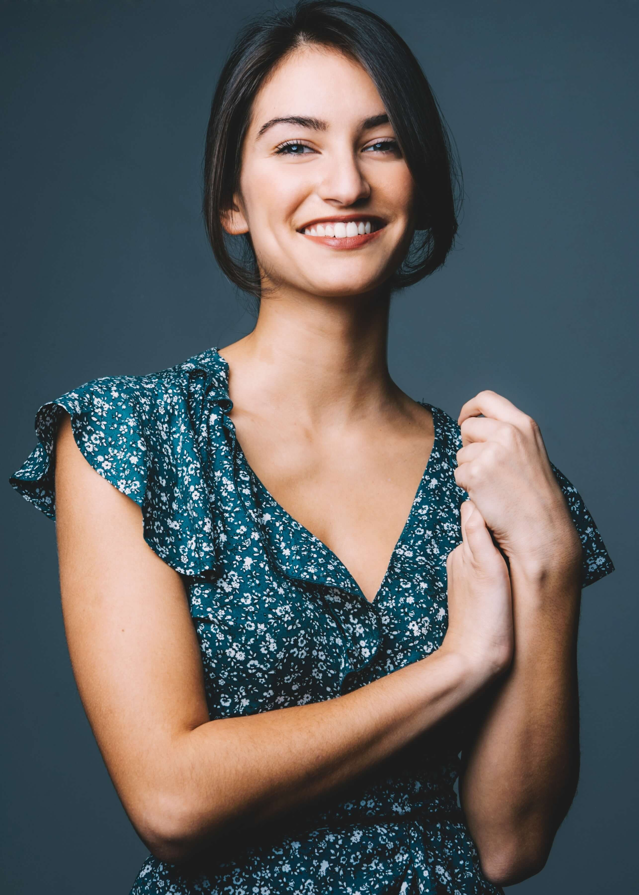
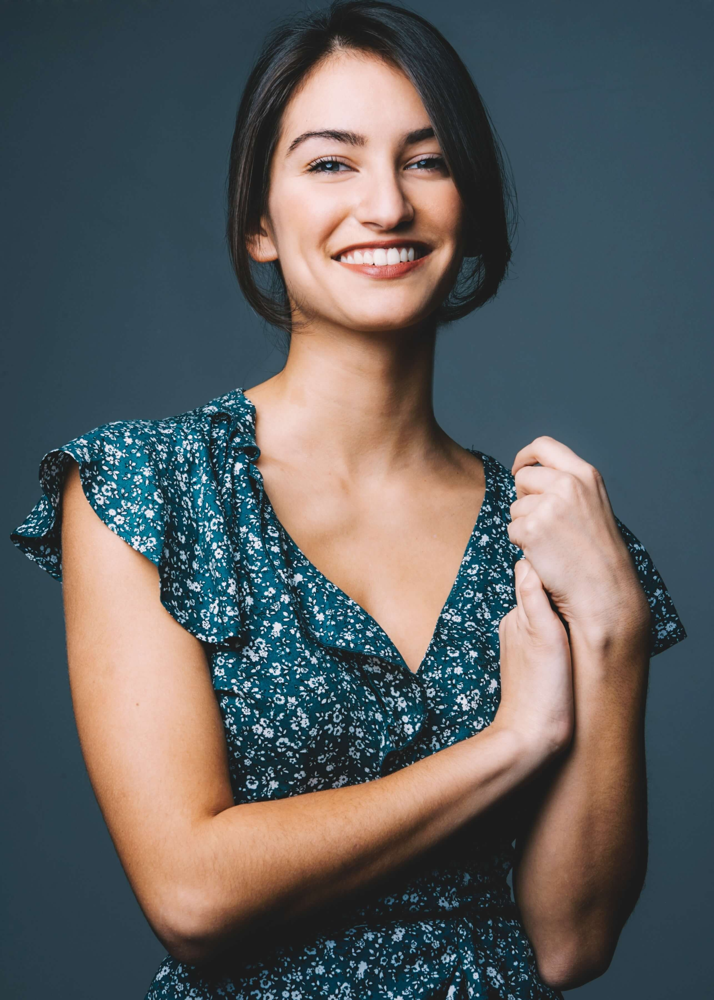

Sonya Balsara is an actor and singer based in New York City. A recent graduate of NYU Tisch School of the Arts, she studied Musical Theatre at the New Studio on Broadway, film acting at Stonestreet Studios and entertainment business at the Stern School of Business and Steinhardt.
She most recently played Maria in West Side Story in the international production at IHI StageAround in Tokyo, Japan. She has also been seen on Amazon Prime’s Mozart in the Jungle Season 4, Boaz Yakin’s independent film Boarding School, and has been featured in various commercials and music videos.
Sonya also finds joy and inspiration through travel, volunteering, and hiking.
 
